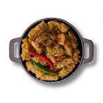

Sarmale

Aceste sarmale tradiționale nu lipsesc de pe mesele de Sărbătoare ale românilor.
Se fac sarmale de Crăciun, de Anul Nou, la celebrarea diferiților sfinți și chiar și de Paști
(în unele zone). Cele mai îndrăgite sărmăluțe românești sunt cele cu carne tocată de porc (sau mix porc-vită),
învelite în foi subțiri de varză murată.
Ingredients
- pulpa porc - 500 g
- pulpa sau piept vita cu grasime-500 g
- poala de porc proaspata sau kaizer, slanina afumata - 200 g
- 2-3 cepe mari (cam 400 g ceapa)
- 100 - 150 g orez cu bob rotund
- 1 morcov mic
- 1 lingura telina radacina rasa
- 2 linguri malai
- sare, piper, coriandru, cimbru, boia de ardei dulce, iute, ardei iute, chimen macinat
marar si patrunjel
- 1-2 linguri untura sau ulei
- pasta de tomate sau suc de rosii
- 1 cana cu vin alb (cam 200 ml)
- varza proaspata sau murata
Steps
- Carnea (in nici un caz cumparata din magazin gata tocata – se pun toate mizeriile si stricaciunile) se alege de pielite, oase, cheaguri de sange, se spala si se trece prin masina de tocat. Daca folositi slanina sau poala de porc proaspata, le tocati si pe acelea.
- Untura sau uleiul se pun intr-o tigaie la incins si se adauga ceapa tocata marunt, morcovul si telina date pe razatoarea fina.
- Nu se lasa mult, eu nu le prajesc, ci doar cat se inmoaie, la foc rapid, amestecand incontinuu – maxim 5 minute si se lasa la racit.
- Cel mai bine este sa se puna 100-150 g de orez la 1 kg de carne si vor fi sarmalele carnoase si gustoase. Acestea sunt sarmalele de sarbatoare, cum se spune la tara.
- In zilele obisnuite, la 1 kg de carne se pun cam 250-300 g de orez la 1 kg de carne (o cana cu varf) si se pun multa ceapa, morcov, verdeata. Delicioase sunt si acestea, si in felul acesta „se inmultesc sarmalele”.
- Cand este rece se adauga peste carne impreuna cu orezul ales si spalat, malaiul (sau pasat), verdeata tocata marunt, 1-2 linguri de pasta de tomate, sare, cimbru, piper si ardei iute, boia, putin coriandru (cam 5-6 bobite, numai cat sa dea aroma discreta), un varf de cutit chimen macinat si ceapa inabusita.
- Se amesteca bine totul cu o lingura de lemn, mie-mi place sa bat putin aluatul, pentru ca devine pufos prin inglobarea de aer, ca la pasta de mici.